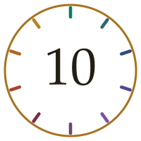

ICU and You · The Top Ten

A month of material, reduced to the ten things worth carrying
Fifty-one new pieces went up this month, across the toddler and preschool child, the school-age child and the adolescent. This is what survived the boiling down.
The Top Ten is the absolute distillation — the ten takeaways from everything published as new material in the month. Short, blunt, and chosen for one criterion only: would knowing this change what somebody does? Each links back to the piece it came from if you want the argument behind it.
If you read nothing else from September, read this page. It will take you four minutes.
Subscribers get it first. The Top Ten goes out with the newsletter a few days before it appears here — come and join us if you would rather not wait.
After about eight, the cords are the narrowest point — not the cricoid.
Cuffed tubes throughout, and watch the pressure. The doctrine that said otherwise rests on one French anatomist in 1897, plaster casts of fifteen children who had died of diphtheria, and a 1951 review that carried it into English while explicitly warning that measurements from the dead may not apply to the living.
A quiet chest in a tiring asthmatic is the emergency, not the reassurance.
This is the peak age for asthma admission and for preventable asthma death. The wheeze was evidence that air was moving. Silence in a child who has stopped fighting you means the situation has already changed.
From Bare Bones No. 1 and Mnemonic #56, SCHOOL
The toddler who lets you examine them happily is the one to worry about.
A furious, resisting child is doing what a well child of that age does. Compliance in a two-year-old is a finding. Examine on the parent's lap, look before you touch, and leave the throat and ears until last.
From Aphorism #37 and Mnemonic #55, TODDLER
A bruise in a child who is not yet cruising has almost certainly been inflicted.
Development sets what is possible. What this child can physically do decides which injuries and which ingestions are plausible, and a bruise on a baby who cannot yet pull to stand has no innocent mechanism available to it.
A button battery in the oesophagus burns within two hours.
Not overnight, not by morning. Ask directly whether anything was swallowed or inhaled, because the choking episode was an hour ago, it resolved, and nobody will volunteer it. A normal film excludes nothing.
From Mnemonic #55, TODDLER and Superpuzzle #50
If the child is worse than the radiograph explains, stop explaining them with the radiograph.
A previously well nine-year-old with mycoplasma — an organism nobody fears — deteriorated out of proportion to his films because of an airway cast and a pulmonary thromboembolism at once. Something unimaged is happening. Go and look for it.
From Journal Club #99 and Mnemonic #56, SCHOOL
Myocarditis arrives dressed as gastroenteritis, and the bolus that makes them worse is the diagnostic moment.
Vomiting, lethargy, poor feeding, a tachycardia you attribute to the fluid deficit. Then you give the fluid and they deteriorate. That is not a failed resuscitation; it is information, and it arrives early enough to act on if you are listening for it.
From Bare Bones No. 1
In hyperosmolar DKA, the fluid goes in before the glucose comes down.
The osmolality is holding water in the vessels, so the circulation looks better than the tissues are. Start insulin, the glucose falls, the water leaves the circulation for the tissues where it was always needed — and you can produce shock in a patient who is receiving intravenous fluid. Resuscitate first, and have a plan for when insulin starts.
From Podcast #59 and Superpuzzle #52
See the adolescent alone for part of every admission — and say what confidentiality covers before they tell you anything.
Be concrete about where the line falls: what they smoke at the weekend stays within the treating team, a disclosure that somebody is hurting them does not. Never offer a secrecy you will have to break. Their account of what happened is often not the parents' account.
From Bare Bones No. 2, Mind Map #35 and Mnemonic #57, ADULT
Maturity decides capacity, not the birthday — and the statute built around that is local to you.
The principle comes from the English Gillick case and runs through most of the common-law world. What differs, country by country and state by state, is the law built on it: New South Wales sets no age at all, South Australia sets sixteen. Consent and refusal are not mirror images either. Look up your own jurisdiction rather than the number you were taught.
From Bare Bones No. 2 and Medicolegal No. 1
The money the vaccine made pays, every year, for the name of the man who did not live to see it.
Jian Zhou suggested the step that made the particle assemble, and died in March 1999, aged forty-two, seven years before Gardasil was approved. Ian Frazer put the royalties into a family foundation, and that foundation funds the Jian Zhou Medal. From Notable Doctors No. 1.
Which of the ten did you already know — and which one changed something?
I am interested in both halves. If nine of these were familiar, tell me, because that tells me where to pitch next month. And if one of them made you go and check something, that is the most useful thing you could send me.
The button opens a reply straight to me. If your device blocks it, write to icuandyou@icloud.com instead.